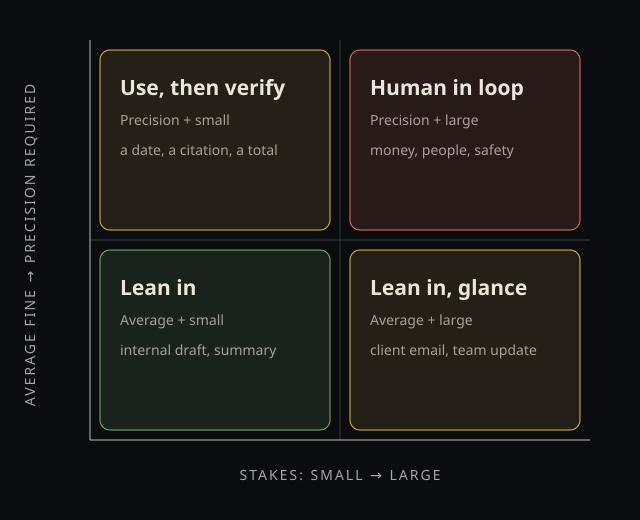
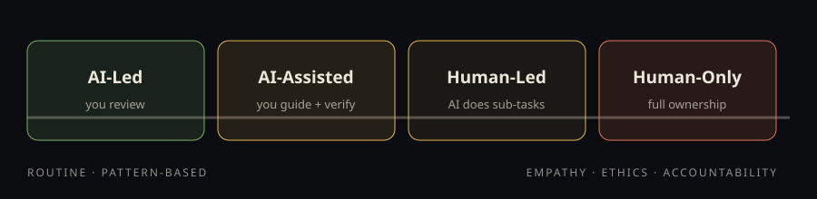
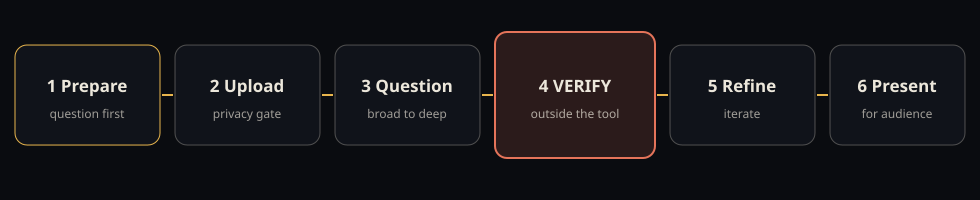

Frameworks Reference Sheet
The Human Edge — Frameworks Reference
Using and Delivering AI with Judgement | Curtin Business School Executive Education
One spine, four tools. Keep this open during the workshop; export it with your workbook afterwards. There is no printed version — this page is the reference, on the device where the work happens.
Booked as The Human Edge: Building Everyday Capability. Delivered as The Human Edge — same promised outcomes, judgement made explicit.
The Trust Tool — the spine
Question: How much should I trust this output, and how much checking does it need?
AI produces a convincing average: fluent, well-shaped, usually about right. Whether that is good enough depends on two questions: do you need an average or precision? And are the stakes small or large? Plot the output. The corner tells you the check.

Rules that never bend
- Verification comes from outside the tool — against the data, the source, or an independent standard. Asking the model to check itself does not count.
- Fluency is not evidence. The smoother it reads, the more reason to check the load-bearing parts.
- Weak human work announces itself. Weak AI work announces nothing. Run the check your alarm no longer runs.
Worked example: a board paper's narrative summary sits top-left of "average + large" — draft it with AI, sanity-check the argument. The same paper's financial table is precision + large — a person owns every figure.
Framework 1 — AI Task Suitability Spectrum
Question: Should AI touch this task at all, and in what role? (The Spectrum says whether. The Trust Tool says how much to check.)

- AI-Led — routine, pattern-based, high-volume: formatting minutes, first-draft standard reports, summaries. You review and approve.
- AI-Assisted — judgement needed, speed helps: client proposals, survey analysis, research synthesis. You guide and verify.
- Human-Led, AI-Supported — complex work with routine sub-parts: strategy documents, performance reviews, negotiation prep. You lead; AI handles sub-tasks.
- Human-Only — empathy, ethics, accountability: difficult conversations, decisions about a person's career, crisis response. Full ownership.
When in doubt, start one zone more human than you think, and delegate as trust is earned on evidence.
Framework 2 — RTCF: briefing AI well
Question: How do I ask for what I actually need? Mindset: conversation, not delegation — brief a capable junior colleague who knows nothing about your job. The tool supplies the form; you supply the substance.
- R — Role: who should it be? Specific beats theatrical: "senior HR consultant, Australian employment law."
- T — Task: verb + scope: "summarise into 5 bullets for a board," not "help with this report."
- C — Context: audience, history, stakes, constraints — the grounding only you can supply. Steal this line: "for someone who must decide this week and cannot undo it."
- F — Format: length, structure, table columns — output you can paste, not rewrite.
Not every prompt needs all four. Anything important does.
When the model is weaker, climb the ladder. Strong models forgive a sloppy brief by inferring what you left out; weaker and free-tier models cannot, so RTCF earns most exactly there. Add, in order: (1) full RTCF every time; (2) one worked example of the output you want — show, don't describe; (3) explicit constraints — "use only figures in the table; write MISSING rather than estimate"; (4) one step at a time, showing its working, checked before the next; (5) fact-gated pushback — "only change your assessment if I give you new facts, and name the fact that changed it," then push with no evidence and see whether it holds.
Common mistakes: vague task, no context, no format, everything in one giant prompt, accepting the first draft.
Framework 3 — AI-Assisted Analysis Workflow
Question: How do I get data insights I can defend?

- Prepare — write the question first; start a fresh chat (long conversations drift toward your framing). If you cannot state the question, you cannot judge the answer.
- Upload — clean headers, consistent formats. Privacy gate: personal or confidential data never goes into a free-tier tool.
- Question — broad to deep: overview, descriptives, patterns, drivers, recommendations. Follow surprises.
- Verify — spot-check totals and averages against the source. Watch for miscounts, correlation sold as cause, silently ignored missing data, invented figures. If a finding would change a decision, verify it.
- Refine — slice, exclude outliers, re-run. Good analysis takes 3–5 rounds.
- Present — format for the audience, then add your interpretation. The AI's output is the starting point, not the brief.
Framework 4 — AI Opportunity Finder
Question: Where in my week does AI earn its place — and in what order?
Four signals: Automate (frequent, same pattern, no judgement — formatting, routing, status compilation); Assist (reading, gathering, comparing, summarising); Generate (emails, agendas, documentation, outlines); Analyse (performance, feedback, variance, surveys).
Audit one typical week: list recurring tasks over 15 minutes, tag each with a signal (or Human-Only), note current time. Then sequence — this is the final step of the framework, not a fifth tool: quick wins first (low effort, high time saved) to build fluency and proof; big wins next with a planned redesign; low-payoff tasks wait. Classify every candidate on the Spectrum and plot it on the Trust Tool before handing anything over.
How they work together
Encounter a task → Spectrum: should AI touch it? → RTCF: brief it → data involved? → Analysis Workflow → before anything ships → Trust Tool: how much check does this corner demand? Once a week → Opportunity Finder: what is the next candidate?
Agents, skills, and memory — in one paragraph each
An agent is a model in a loop with tools; the harness (instructions, context, permitted tools) shapes that loop; the part you own is the skill — a plain-text brief, essentially your RTCF prompt with its format and verification rule, written once and reused across tools. An agent automates the loop, not the standard: self-checking inherits the model's blind spots.
Your assistant keeps three separate stores: what you told it, what it inferred from your chats (deleting chats does not delete this), and the chats themselves. Review them under memory/personalisation settings; use private or temporary mode for anything you do not want learned; follow your employer's approved-tool policy for work data.
The four moves, for the rest of your career
Decide what human eyes must still judge. Practise there with the compare drill — your pass, AI's pass, side by side. Trade only what AI has proven reliable on your work. Revisit every few months. The line keeps moving.
Questions: michael.borck@curtin.edu.au